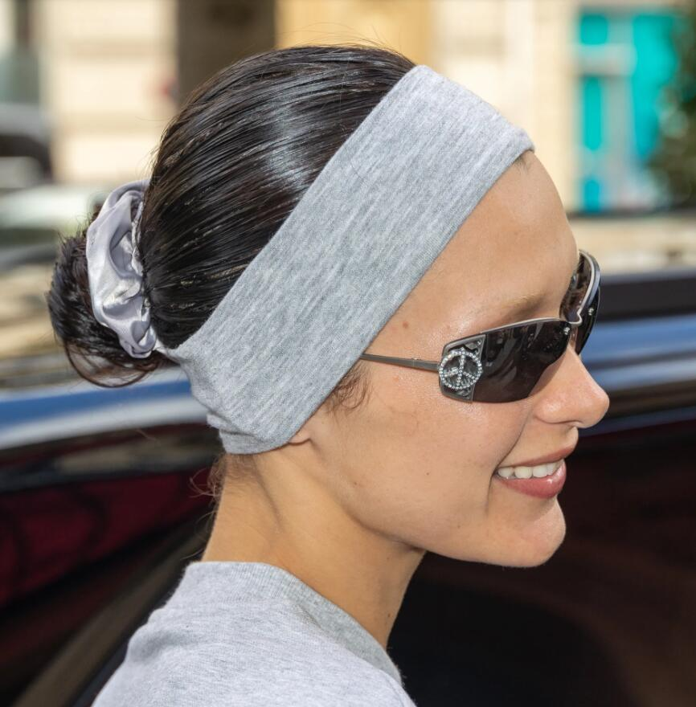

La fascia per capelli, il trend nostalgico ripreso da Bella Hadid
Fascia per capelli: dalle passerelle alle celeb
Avvistata sulle passerelle delle ultime stagioni, la fascia per capelli di ispirazione anni 90 si è diffusa sui social network, ripresa da celeb e trend setter. Bella Hadid l'ha indossata più volte, facendone il focus dei suoi look. Con una fascia bianca, omaggio a Brigitte Bardot, T-shirt corta e gonna lunga a vita bassissima con maxi cintura ha celebrato la sua nuova collaborazione con il marchio di frullati Kinsicle, portando su look contemporanei le suggestioni dell'epoca. L'ultimo, non trascurabile, dettaglio, è il piccolo fermaglio dorato – dichiaratamente anni 90 – a fermare la fascia.
Sull'onda nostalgica del revival della moda 90 e 2000, tornano in auge gli accessori per capelli tipici di quegli anni: fasce, scrunchies, bandane... Capofila del trend, la top model Bella Hadid, che ha trasformato la fascia per capelli nel più cool dei dettagli di stile.
Intramontabile e all’allure romantica, la fascia è un accessorio facile e versatile: morbida, elastica, ampia ad abbracciare buona parte del capo, può essere più classica in monocromia, a fantasia, o ricavata da un foulard annodato.